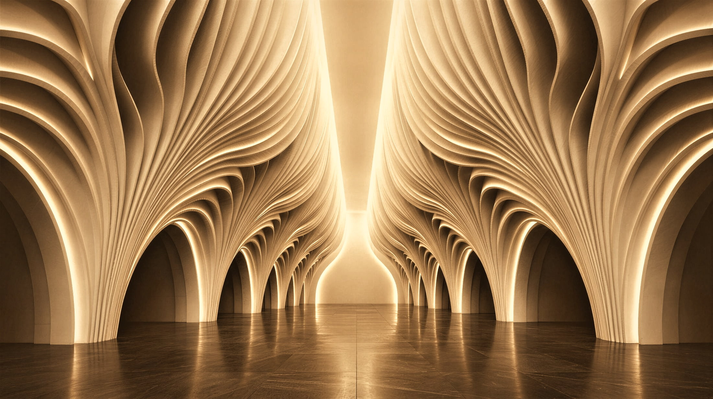
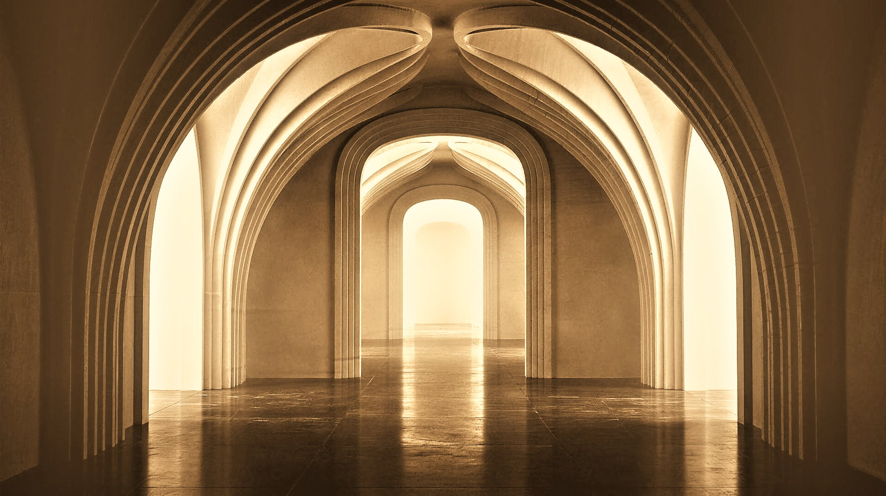
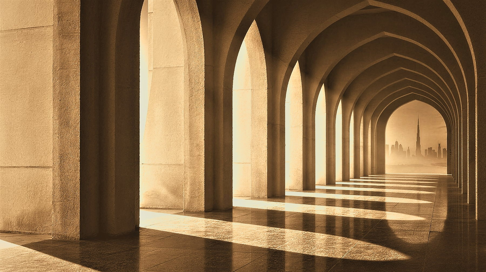

Residential / Full Turnkey

Interior Architecture
Imagination, built.
Interior architecture without boundaries.

Beyond Interiors

Established in Dubai in 2015, with over a decade of experience, Karen K Sanctuaries is an interior architecture studio working across residential, hospitality and commercial projects in the UAE and internationally.
A beachfront villa, a garden new build and a residence abroad — three commissions that show the reach of the studio.
Residential / Full Turnkey

New Build

International
0103
Karen K’s signature transformation service — distinct from full turnkey projects
 BeforeAfter
BeforeAfter
 BeforeAfter
BeforeAfter
 BeforeAfter
BeforeAfter
We study the property, its potential and its limitations. What stays, what changes and where the greatest impact can be achieved are established from the outset.
The existing space is reconsidered through layout, material, lighting, proportion and atmosphere — creating a clear new direction without starting from zero.
Scope, priorities, budget and programme are defined before execution begins, creating a focused roadmap for a fast and controlled transformation.
Finishes, lighting, furniture, joinery and key statement pieces are selected and coordinated to deliver the new identity of the space.
Contractors, suppliers, procurement and installation are coordinated on site, with each intervention managed to minimise disruption and unnecessary works.
The final layers are installed, styled and refined until the transformation is complete — a substantially new experience of the property without rebuilding it from the ground up.
Karen on the thinking behind the method: speed and efficient delivery, value and considered investment, finish quality, minimal unnecessary demolition, and transforming owned and rented properties alike.

Residential, hospitality and commercial commissions in the UAE and internationally. The first consultation is private and without obligation.
Start a project